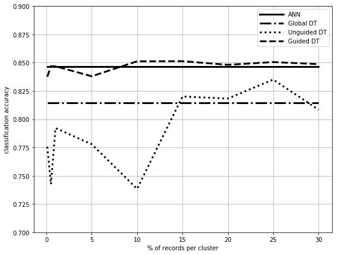

import pandas as pd
import matplotlib.pyplot as plt
import seaborn as sns
import numpy as np
import scipy as scp
from itertools import product
%matplotlib inline
headers = ['age','workclass','fnlwgt','education','education-num','marital-status',
'occupation','relationship','race','sex','capital-gain','capital-loss',
'hours-per-week','native-country','class']
adult = pd.read_csv('./datasets/adult.data',
sep=', ', names=headers, na_values='?', engine='python')
---------------------------------------------------------------------------
ModuleNotFoundError Traceback (most recent call last)
Cell In[1], line 1
----> 1 import pandas as pd
2 import matplotlib.pyplot as plt
3 import seaborn as sns
ModuleNotFoundError: No module named 'pandas'
# Drop all records with missing values
adult.dropna(inplace=True)
adult.reset_index(drop=True, inplace=True)
# Drop fnlwgt, not interesting for ML
adult.drop('fnlwgt', axis=1, inplace=True)
adult.info()
<class 'pandas.core.frame.DataFrame'>
RangeIndex: 30162 entries, 0 to 30161
Data columns (total 14 columns):
age 30162 non-null int64
workclass 30162 non-null object
education 30162 non-null object
education-num 30162 non-null int64
marital-status 30162 non-null object
occupation 30162 non-null object
relationship 30162 non-null object
race 30162 non-null object
sex 30162 non-null object
capital-gain 30162 non-null int64
capital-loss 30162 non-null int64
hours-per-week 30162 non-null int64
native-country 30162 non-null object
class 30162 non-null object
dtypes: int64(5), object(9)
memory usage: 3.2+ MB
# Convert objects to categories
# Education is ordered
ordered_education = ['Preschool','1st-4th','5th-6th','7th-8th','9th',
'10th','11th','12th','HS-grad','Assoc-acdm',
'Assoc-voc','Some-college','Bachelors','Prof-school',
'Masters','Doctorate']
adult['education'] = adult['education'].astype(pd.api.types.CategoricalDtype(categories=ordered_education, ordered=True))
#Hours per week is
# The rest are not
obj_columns = adult.select_dtypes(['object']).columns
adult[obj_columns] = adult[obj_columns].astype('category')
# Convert numerics to floats and normalize
num_columns = adult.select_dtypes(['int64']).columns
adult[num_columns] = adult[num_columns].astype('float64')
for c in num_columns:
#adult[c] -= adult[c].mean()
#adult[c] /= adult[c].std()
adult[c] /= (adult[c].max()-adult[c].min())
adult['class'] = adult['class'].cat.codes
display(adult.info())
display(adult.head(20))
<class 'pandas.core.frame.DataFrame'>
RangeIndex: 30162 entries, 0 to 30161
Data columns (total 14 columns):
age 30162 non-null float64
workclass 30162 non-null category
education 30162 non-null category
education-num 30162 non-null float64
marital-status 30162 non-null category
occupation 30162 non-null category
relationship 30162 non-null category
race 30162 non-null category
sex 30162 non-null category
capital-gain 30162 non-null float64
capital-loss 30162 non-null float64
hours-per-week 30162 non-null float64
native-country 30162 non-null category
class 30162 non-null int8
dtypes: category(8), float64(5), int8(1)
memory usage: 1.4 MB
None
| age | workclass | education | education-num | marital-status | occupation | relationship | race | sex | capital-gain | capital-loss | hours-per-week | native-country | class | |
|---|---|---|---|---|---|---|---|---|---|---|---|---|---|---|
| 0 | 0.5342 | State-gov | Bachelors | 0.8667 | Never-married | Adm-clerical | Not-in-family | White | Male | 0.0217 | 0.0 | 0.4082 | United-States | 0 |
| 1 | 0.6849 | Self-emp-not-inc | Bachelors | 0.8667 | Married-civ-spouse | Exec-managerial | Husband | White | Male | 0.0000 | 0.0 | 0.1327 | United-States | 0 |
| 2 | 0.5205 | Private | HS-grad | 0.6000 | Divorced | Handlers-cleaners | Not-in-family | White | Male | 0.0000 | 0.0 | 0.4082 | United-States | 0 |
| 3 | 0.7260 | Private | 11th | 0.4667 | Married-civ-spouse | Handlers-cleaners | Husband | Black | Male | 0.0000 | 0.0 | 0.4082 | United-States | 0 |
| 4 | 0.3836 | Private | Bachelors | 0.8667 | Married-civ-spouse | Prof-specialty | Wife | Black | Female | 0.0000 | 0.0 | 0.4082 | Cuba | 0 |
| 5 | 0.5068 | Private | Masters | 0.9333 | Married-civ-spouse | Exec-managerial | Wife | White | Female | 0.0000 | 0.0 | 0.4082 | United-States | 0 |
| 6 | 0.6712 | Private | 9th | 0.3333 | Married-spouse-absent | Other-service | Not-in-family | Black | Female | 0.0000 | 0.0 | 0.1633 | Jamaica | 0 |
| 7 | 0.7123 | Self-emp-not-inc | HS-grad | 0.6000 | Married-civ-spouse | Exec-managerial | Husband | White | Male | 0.0000 | 0.0 | 0.4592 | United-States | 1 |
| 8 | 0.4247 | Private | Masters | 0.9333 | Never-married | Prof-specialty | Not-in-family | White | Female | 0.1408 | 0.0 | 0.5102 | United-States | 1 |
| 9 | 0.5753 | Private | Bachelors | 0.8667 | Married-civ-spouse | Exec-managerial | Husband | White | Male | 0.0518 | 0.0 | 0.4082 | United-States | 1 |
| 10 | 0.5068 | Private | Some-college | 0.6667 | Married-civ-spouse | Exec-managerial | Husband | Black | Male | 0.0000 | 0.0 | 0.8163 | United-States | 1 |
| 11 | 0.4110 | State-gov | Bachelors | 0.8667 | Married-civ-spouse | Prof-specialty | Husband | Asian-Pac-Islander | Male | 0.0000 | 0.0 | 0.4082 | India | 1 |
| 12 | 0.3151 | Private | Bachelors | 0.8667 | Never-married | Adm-clerical | Own-child | White | Female | 0.0000 | 0.0 | 0.3061 | United-States | 0 |
| 13 | 0.4384 | Private | Assoc-acdm | 0.8000 | Never-married | Sales | Not-in-family | Black | Male | 0.0000 | 0.0 | 0.5102 | United-States | 0 |
| 14 | 0.4658 | Private | 7th-8th | 0.2667 | Married-civ-spouse | Transport-moving | Husband | Amer-Indian-Eskimo | Male | 0.0000 | 0.0 | 0.4592 | Mexico | 0 |
| 15 | 0.3425 | Self-emp-not-inc | HS-grad | 0.6000 | Never-married | Farming-fishing | Own-child | White | Male | 0.0000 | 0.0 | 0.3571 | United-States | 0 |
| 16 | 0.4384 | Private | HS-grad | 0.6000 | Never-married | Machine-op-inspct | Unmarried | White | Male | 0.0000 | 0.0 | 0.4082 | United-States | 0 |
| 17 | 0.5205 | Private | 11th | 0.4667 | Married-civ-spouse | Sales | Husband | White | Male | 0.0000 | 0.0 | 0.5102 | United-States | 0 |
| 18 | 0.5890 | Self-emp-not-inc | Masters | 0.9333 | Divorced | Exec-managerial | Unmarried | White | Female | 0.0000 | 0.0 | 0.4592 | United-States | 1 |
| 19 | 0.5479 | Private | Doctorate | 1.0667 | Married-civ-spouse | Prof-specialty | Husband | White | Male | 0.0000 | 0.0 | 0.6122 | United-States | 1 |
from sklearn.compose import ColumnTransformer
from sklearn.preprocessing import OneHotEncoder, LabelEncoder
enc = ColumnTransformer(
transformers=[
('num', 'passthrough', [0, 3, 9, 10, 11]),
#('num', 'passthrough', [0, 2, 8, 9, 10]),
('cat', OneHotEncoder(), [1, 2, 4, 5, 6, 7, 8, 12]),])
#('cat', OneHotEncoder(), [1, 3, 4, 5, 6, 7, 11]),])
#('label', LabelEncoder(), 13)])
enc.fit(adult)
ColumnTransformer(n_jobs=None, remainder='drop', sparse_threshold=0.3,
transformer_weights=None,
transformers=[('num', 'passthrough', [0, 3, 9, 10, 11]),
('cat',
OneHotEncoder(categorical_features=None,
categories=None, drop=None,
dtype=<class 'numpy.float64'>,
handle_unknown='error',
n_values=None, sparse=True),
[1, 2, 4, 5, 6, 7, 8, 12])],
verbose=False)
from sklearn.model_selection import train_test_split
X_train, X_test, y_train, y_test = train_test_split(adult.drop('class', axis=1), adult['class'], test_size=0.33, random_state=42)
# Load semantic distances from files
import os
import collections
path = './datasets/semdist/ontodistnolog/'
#path = './datasets/semdist/ontodist/'
#path = './datasets/semdist/embedist/'
categorical_attributes = list(adult.select_dtypes(['category']).columns.values)
distances = {}
for categorical_attribute in categorical_attributes:
with open(path+categorical_attribute+'.txt') as f:
contents = list(f)
categories = list(map(str.strip, contents[0].split(',')))
m = []
for line in contents[1:]:
m.append(list(map(float, map(str.strip, line.split(',')))))
d = collections.defaultdict(dict)
for i in range(len(categories)):
for j in range(len(categories)):
d[categories[i]][categories[j]] = m[i][j]
distances[categorical_attribute] = d
import math
# current best results embedist/weight/nosquare
def dist_attr(x, y, attr_pos, categorical_mask, column_names):
if categorical_mask[attr_pos]:
#return 0.625 * distances[column_names[attr_pos]][x[attr_pos]][y[attr_pos]]**2
#return distances[column_names[attr_pos]][x[attr_pos]][y[attr_pos]]**2
#return 0.625 * distances[column_names[attr_pos]][x[attr_pos]][y[attr_pos]]
return distances[column_names[attr_pos]][x[attr_pos]][y[attr_pos]]
else:
#return (float(x[attr_pos]) - float(y[attr_pos]))**2
return abs(float(x[attr_pos]) - float(y[attr_pos]))
def dist_record(x, y):
d = []
categorical_mask = [0, 1, 1, 0, 1, 1, 1, 1, 1, 0, 0, 0, 1]
#categorical_mask = [0, 1, 0, 1, 1, 1, 1, 1, 0, 0, 0, 1]
column_names = list(adult.columns.values)[:-1]
for i in range(len(column_names)):
d.append(dist_attr(x, y, i, categorical_mask, column_names))
#return float(math.sqrt(sum(d)))
return float(sum(d))
def mean_record(D):
d = []
# 0->age
d.append(float(np.mean(D[:,0])))
# 1->workclass
d.append(mean_semantic(D[:,1], 'workclass'))
# 2->education
d.append(mean_semantic(D[:,2], 'education'))
# 3->education-num
d.append(float(np.mean(D[:,3])))
# 4->marital-status
d.append(mean_semantic(D[:,4], 'marital-status'))
# 5->occupation
d.append(mean_semantic(D[:,5], 'occupation'))
# 6->relationship
d.append(mean_semantic(D[:,6], 'relationship'))
# 7->race
d.append(mean_semantic(D[:,7], 'race'))
# 8->sex
d.append(mean_semantic(D[:,8], 'sex'))
# 9->capital-gain
d.append(float(np.mean(D[:,9])))
#10->capital-loss
d.append(float(np.mean(D[:,10])))
#11->hours-per-week
d.append(float(np.mean(D[:,11])))
#12->native-country
d.append(mean_semantic(D[:,12], 'native-country'))
return d
def mean_semantic(values, attribute_name):
candidates = list(distances[attribute_name].keys())
return values[np.argmin([sum([distances[attribute_name][c][v] for c in candidates]) for v in values])]
def dist(x,y):
return np.linalg.norm(x-y)
#return scipy.spatial.distance.correlation(x,y)
def poprow(arr,i):
pop = arr[i]
new_array = np.vstack((arr[:i],arr[i+1:]))
return new_array,pop
def cluster(X, p, k, dist_to_xr):
#c = [p]
#D = np.column_stack((X,[dist_record(v[:-1],p[:-1]) for v in X]))
#D = D[D[:,-1].argsort()]
#D = np.delete(D, -1, 1)
#c.extend(D[:k-1])
#D = D[k-1:]
#xc = np.array([p[:-1] for p in c], copy=False, ndmin=2)
#yc = np.array([p[-1] for p in c], copy=False)
#cl = (xc, yc)
#return D, cl
c = [p]
if dist_to_xr == None:
distances = [dist_record(v[:-1],p[:-1]) for v in X]
else:
distances = dist_to_xr
X = X[np.argpartition(distances, k-1)]
c.extend(X[:k-1])
X = X[k-1:]
xc = np.array([p[:-1] for p in c], copy=False, ndmin=2)
yc = np.array([p[-1] for p in c], copy=False)
cl = (xc, yc)
return X, cl
def mdav(X, y, k):
D = np.column_stack((X,y))
clusters = []
while len(D) >= 3*k:
# Centroid
xm = mean_record(D)
# Furthest from centroid
xri = np.argmax([dist_record(v[:-1],xm) for v in D])
D, xr = poprow(D, xri)
# Furthest from furthest from centroid
dist_to_xr = [dist_record(v[:-1],xr[:-1]) for v in D]
xsi = np.argmax(dist_to_xr)
dist_to_xr = dist_to_xr[:xsi] + dist_to_xr[xsi+1:]
D, xs = poprow(D, xsi)
#cluster of xr
D, c = cluster(D, xr, k, dist_to_xr)
clusters.append(c)
#cluster of xs
D, c = cluster(D, xs, k, None)
clusters.append(c)
if len(D) >= 2*k and len(D) < 3*k:
# Centroid
xm = mean_record(D)
# Furthest from centroid
xri = np.argmax([dist_record(v[:-1],xm) for v in D])
D, xr = poprow(D, xri)
#cluster of xr
D, c = cluster(D, xr, k, None)
clusters.append(c)
# rest of points
xc = np.array([p[:-1] for p in D[:]], copy=False, ndmin=2)
yc = np.array([p[-1] for p in D[:]], copy=False)
cl = (xc, yc)
clusters.append(cl)
else:
# rest of points
xc = np.array([p[:-1] for p in D[:]], copy=False, ndmin=2)
yc = np.array([p[-1] for p in D[:]], copy=False)
cl = (xc, yc)
clusters.append(cl)
centroids = np.array([mean_record(c[0]) for c in clusters], copy=False)
return clusters, centroids
from sklearn import tree
def gen_explanations(clustering, max_depth=-1):
explanations = []
for cluster in clustering:
# Testing with max depth
if max_depth < 1:
exp = tree.DecisionTreeClassifier()
else:
exp = tree.DecisionTreeClassifier(max_depth=max_depth)
exp.fit(enc.transform(cluster[0]),cluster[1])
explanations.append(exp)
return explanations
def pre_explanations(explanations, centroids, X):
predictions = []
for sample in X:
#select the closest classifier
exp = explanations[np.argmin([dist_record(sample,c) for c in centroids])]
exp_pred = exp.predict(enc.transform([sample]))
predictions.append(exp_pred[0])
return predictions
def pre_explanations_ext(explanations, centroids, X, T, n):
predictions = []
ret_exp = []
ret_cen = []
for sample, truth in zip(X,T):
#select the 3 closest classifiers
mins = np.array([dist_record(sample,c) for c in centroids]).argsort()[:n]
for m in mins:
exp = explanations[m]
exp_pred = exp.predict(enc.transform([sample]))
if(exp_pred[0] == truth):
break
predictions.append(exp_pred[0])
ret_exp.append(exp)
ret_cen.append(centroids[m])
return predictions, ret_exp, ret_cen
import time
exec_times = []
# Generate clusters for different representativities
representativity = [0.001, 0.005, 0.01, 0.05, 0.1, 0.15, 0.2, 0.25, 0.3]
#representativity = [0.1]
K = [int(len(X_train)*r) for r in representativity]
clusterings = []
centroids_of_clusterings = []
for k in K:
start = time.time()
clustering, centroids = mdav(X_train, y_train, k)
clusterings.append(clustering)
centroids_of_clusterings.append(centroids)
end = time.time()
exec_times.append(end-start)
display(f'Time for k={k}: {end-start} seconds.')
'Time for k=20: 351.36107540130615 seconds.'
'Time for k=101: 73.18500590324402 seconds.'
'Time for k=202: 37.2149863243103 seconds.'
'Time for k=1010: 7.747025489807129 seconds.'
'Time for k=2020: 4.483044624328613 seconds.'
'Time for k=3031: 3.152045488357544 seconds.'
'Time for k=4041: 2.557009220123291 seconds.'
'Time for k=5052: 2.4509990215301514 seconds.'
'Time for k=6062: 1.7690000534057617 seconds.'
print(exec_times)
[351.36107540130615, 73.18500590324402, 37.2149863243103, 7.747025489807129, 4.483044624328613, 3.152045488357544, 2.557009220123291, 2.4509990215301514, 1.7690000534057617]
# Train explanations
shallow = True
clu_explanations = []
for clustering in clusterings:
# Test shallow trees depht=4
if shallow:
explanations = gen_explanations(clustering, 4)
else:
explanations = gen_explanations(clustering, -1)
clu_explanations.append(explanations)
# Train blackbox model
from sklearn.neural_network import MLPClassifier
blackbox = MLPClassifier(hidden_layer_sizes=(100,100,100), max_iter=500, alpha=0.0001,
solver='sgd', verbose=10, random_state=21,tol=0.000000001)
blackbox.fit(enc.transform(X_train), y_train)
display(blackbox.score(enc.transform(X_test), y_test))
Iteration 1, loss = 0.57705508
Iteration 2, loss = 0.52930086
Iteration 3, loss = 0.49680667
Iteration 4, loss = 0.46915602
Iteration 5, loss = 0.44768357
Iteration 6, loss = 0.43197290
Iteration 7, loss = 0.42038122
Iteration 8, loss = 0.41124603
Iteration 9, loss = 0.40387364
Iteration 10, loss = 0.39756847
Iteration 11, loss = 0.39224810
Iteration 12, loss = 0.38792035
Iteration 13, loss = 0.38433018
Iteration 14, loss = 0.38127270
Iteration 15, loss = 0.37869095
Iteration 16, loss = 0.37592755
Iteration 17, loss = 0.37401537
Iteration 18, loss = 0.37182924
Iteration 19, loss = 0.37006655
Iteration 20, loss = 0.36854639
Iteration 21, loss = 0.36703616
Iteration 22, loss = 0.36558781
Iteration 23, loss = 0.36427398
Iteration 24, loss = 0.36310023
Iteration 25, loss = 0.36194671
Iteration 26, loss = 0.36087554
Iteration 27, loss = 0.35994250
Iteration 28, loss = 0.35882968
Iteration 29, loss = 0.35802934
Iteration 30, loss = 0.35717421
Iteration 31, loss = 0.35614698
Iteration 32, loss = 0.35541586
Iteration 33, loss = 0.35465014
Iteration 34, loss = 0.35390228
Iteration 35, loss = 0.35319539
Iteration 36, loss = 0.35249410
Iteration 37, loss = 0.35173646
Iteration 38, loss = 0.35181915
Iteration 39, loss = 0.35085238
Iteration 40, loss = 0.34993801
Iteration 41, loss = 0.34952891
Iteration 42, loss = 0.34918502
Iteration 43, loss = 0.34853915
Iteration 44, loss = 0.34793795
Iteration 45, loss = 0.34746227
Iteration 46, loss = 0.34784747
Iteration 47, loss = 0.34692536
Iteration 48, loss = 0.34613111
Iteration 49, loss = 0.34578731
Iteration 50, loss = 0.34533263
Iteration 51, loss = 0.34495089
Iteration 52, loss = 0.34459220
Iteration 53, loss = 0.34436606
Iteration 54, loss = 0.34381038
Iteration 55, loss = 0.34371668
Iteration 56, loss = 0.34319950
Iteration 57, loss = 0.34293582
Iteration 58, loss = 0.34261108
Iteration 59, loss = 0.34251918
Iteration 60, loss = 0.34216073
Iteration 61, loss = 0.34176578
Iteration 62, loss = 0.34134772
Iteration 63, loss = 0.34121493
Iteration 64, loss = 0.34068028
Iteration 65, loss = 0.34062108
Iteration 66, loss = 0.34060801
Iteration 67, loss = 0.33989288
Iteration 68, loss = 0.33971113
Iteration 69, loss = 0.33972062
Iteration 70, loss = 0.33921608
Iteration 71, loss = 0.33908355
Iteration 72, loss = 0.33856306
Iteration 73, loss = 0.33862507
Iteration 74, loss = 0.33839439
Iteration 75, loss = 0.33813457
Iteration 76, loss = 0.33837338
Iteration 77, loss = 0.33738600
Iteration 78, loss = 0.33724964
Iteration 79, loss = 0.33714728
Iteration 80, loss = 0.33732002
Iteration 81, loss = 0.33655600
Iteration 82, loss = 0.33650388
Iteration 83, loss = 0.33611916
Iteration 84, loss = 0.33586968
Iteration 85, loss = 0.33546011
Iteration 86, loss = 0.33553015
Iteration 87, loss = 0.33548849
Iteration 88, loss = 0.33516977
Iteration 89, loss = 0.33484925
Iteration 90, loss = 0.33435928
Iteration 91, loss = 0.33457424
Iteration 92, loss = 0.33437114
Iteration 93, loss = 0.33423908
Iteration 94, loss = 0.33388649
Iteration 95, loss = 0.33352245
Iteration 96, loss = 0.33340345
Iteration 97, loss = 0.33313584
Iteration 98, loss = 0.33312200
Iteration 99, loss = 0.33340295
Iteration 100, loss = 0.33251304
Iteration 101, loss = 0.33252203
Iteration 102, loss = 0.33200244
Iteration 103, loss = 0.33202162
Iteration 104, loss = 0.33190476
Iteration 105, loss = 0.33147359
Iteration 106, loss = 0.33171775
Iteration 107, loss = 0.33133793
Iteration 108, loss = 0.33084971
Iteration 109, loss = 0.33100037
Iteration 110, loss = 0.33070103
Iteration 111, loss = 0.33041343
Iteration 112, loss = 0.33006221
Iteration 113, loss = 0.33011103
Iteration 114, loss = 0.33027297
Iteration 115, loss = 0.32966027
Iteration 116, loss = 0.32964853
Iteration 117, loss = 0.32909757
Iteration 118, loss = 0.32937213
Iteration 119, loss = 0.32851817
Iteration 120, loss = 0.32830631
Iteration 121, loss = 0.32857640
Iteration 122, loss = 0.32802470
Iteration 123, loss = 0.32810772
Iteration 124, loss = 0.32773642
Iteration 125, loss = 0.32795464
Iteration 126, loss = 0.32916793
Iteration 127, loss = 0.32768214
Iteration 128, loss = 0.32690228
Iteration 129, loss = 0.32639484
Iteration 130, loss = 0.32631812
Iteration 131, loss = 0.32625461
Iteration 132, loss = 0.32593070
Iteration 133, loss = 0.32603711
Iteration 134, loss = 0.32550450
Iteration 135, loss = 0.32536322
Iteration 136, loss = 0.32547861
Iteration 137, loss = 0.32492957
Iteration 138, loss = 0.32473735
Iteration 139, loss = 0.32424997
Iteration 140, loss = 0.32477403
Iteration 141, loss = 0.32433593
Iteration 142, loss = 0.32377956
Iteration 143, loss = 0.32407229
Iteration 144, loss = 0.32373489
Iteration 145, loss = 0.32292889
Iteration 146, loss = 0.32295269
Iteration 147, loss = 0.32290485
Iteration 148, loss = 0.32266418
Iteration 149, loss = 0.32247733
Iteration 150, loss = 0.32209801
Iteration 151, loss = 0.32279762
Iteration 152, loss = 0.32172631
Iteration 153, loss = 0.32177959
Iteration 154, loss = 0.32126680
Iteration 155, loss = 0.32094950
Iteration 156, loss = 0.32086448
Iteration 157, loss = 0.32095217
Iteration 158, loss = 0.32042880
Iteration 159, loss = 0.32048687
Iteration 160, loss = 0.32043136
Iteration 161, loss = 0.32034003
Iteration 162, loss = 0.31966649
Iteration 163, loss = 0.31933341
Iteration 164, loss = 0.31976951
Iteration 165, loss = 0.31958795
Iteration 166, loss = 0.31859916
Iteration 167, loss = 0.31872287
Iteration 168, loss = 0.31821030
Iteration 169, loss = 0.31793796
Iteration 170, loss = 0.31769924
Iteration 171, loss = 0.31814953
Iteration 172, loss = 0.31761867
Iteration 173, loss = 0.31748463
Iteration 174, loss = 0.31781667
Iteration 175, loss = 0.31673824
Iteration 176, loss = 0.31687648
Iteration 177, loss = 0.31668450
Iteration 178, loss = 0.31621177
Iteration 179, loss = 0.31591802
Iteration 180, loss = 0.31553832
Iteration 181, loss = 0.31623585
Iteration 182, loss = 0.31508304
Iteration 183, loss = 0.31556217
Iteration 184, loss = 0.31465051
Iteration 185, loss = 0.31453919
Iteration 186, loss = 0.31419620
Iteration 187, loss = 0.31425693
Iteration 188, loss = 0.31433250
Iteration 189, loss = 0.31354548
Iteration 190, loss = 0.31360323
Iteration 191, loss = 0.31344541
Iteration 192, loss = 0.31310782
Iteration 193, loss = 0.31260978
Iteration 194, loss = 0.31282866
Iteration 195, loss = 0.31255126
Iteration 196, loss = 0.31193992
Iteration 197, loss = 0.31171412
Iteration 198, loss = 0.31193880
Iteration 199, loss = 0.31169530
Iteration 200, loss = 0.31127247
Iteration 201, loss = 0.31159655
Iteration 202, loss = 0.31127867
Iteration 203, loss = 0.31084896
Iteration 204, loss = 0.31053551
Iteration 205, loss = 0.31033168
Iteration 206, loss = 0.31025646
Iteration 207, loss = 0.31130636
Iteration 208, loss = 0.30995619
Iteration 209, loss = 0.30976386
Iteration 210, loss = 0.30990976
Iteration 211, loss = 0.30896183
Iteration 212, loss = 0.31038826
Iteration 213, loss = 0.30849318
Iteration 214, loss = 0.30819787
Iteration 215, loss = 0.30849393
Iteration 216, loss = 0.30784960
Iteration 217, loss = 0.30768535
Iteration 218, loss = 0.30831285
Iteration 219, loss = 0.30889623
Iteration 220, loss = 0.30774542
Iteration 221, loss = 0.30749959
Iteration 222, loss = 0.30729658
Iteration 223, loss = 0.30689744
Iteration 224, loss = 0.30650141
Iteration 225, loss = 0.30703695
Iteration 226, loss = 0.30632541
Iteration 227, loss = 0.30601059
Iteration 228, loss = 0.30691466
Iteration 229, loss = 0.30593278
Iteration 230, loss = 0.30590071
Iteration 231, loss = 0.30571039
Iteration 232, loss = 0.30595733
Iteration 233, loss = 0.30548195
Iteration 234, loss = 0.30506889
Iteration 235, loss = 0.30484975
Iteration 236, loss = 0.30475425
Iteration 237, loss = 0.30459825
Iteration 238, loss = 0.30469911
Iteration 239, loss = 0.30462580
Iteration 240, loss = 0.30427814
Iteration 241, loss = 0.30459589
Iteration 242, loss = 0.30356208
Iteration 243, loss = 0.30324150
Iteration 244, loss = 0.30330536
Iteration 245, loss = 0.30304422
Iteration 246, loss = 0.30286579
Iteration 247, loss = 0.30201037
Iteration 248, loss = 0.30252653
Iteration 249, loss = 0.30208383
Iteration 250, loss = 0.30214472
Iteration 251, loss = 0.30194415
Iteration 252, loss = 0.30171260
Iteration 253, loss = 0.30141841
Iteration 254, loss = 0.30117831
Iteration 255, loss = 0.30105685
Iteration 256, loss = 0.30158558
Iteration 257, loss = 0.30247730
Iteration 258, loss = 0.30055728
Iteration 259, loss = 0.30044400
Iteration 260, loss = 0.30061300
Iteration 261, loss = 0.30010543
Iteration 262, loss = 0.30056080
Iteration 263, loss = 0.29999580
Iteration 264, loss = 0.30028956
Iteration 265, loss = 0.29949875
Iteration 266, loss = 0.29907249
Iteration 267, loss = 0.29989414
Iteration 268, loss = 0.29979603
Iteration 269, loss = 0.29921246
Iteration 270, loss = 0.29947035
Iteration 271, loss = 0.29913849
Iteration 272, loss = 0.29909025
Iteration 273, loss = 0.29804723
Iteration 274, loss = 0.29817408
Iteration 275, loss = 0.29771121
Iteration 276, loss = 0.29758593
Iteration 277, loss = 0.29897297
Iteration 278, loss = 0.29803378
Iteration 279, loss = 0.29910224
Iteration 280, loss = 0.29874724
Iteration 281, loss = 0.29730553
Iteration 282, loss = 0.29711184
Iteration 283, loss = 0.29709073
Iteration 284, loss = 0.29685544
Iteration 285, loss = 0.29647126
Iteration 286, loss = 0.29656867
Iteration 287, loss = 0.29618840
Iteration 288, loss = 0.29626353
Iteration 289, loss = 0.29652742
Iteration 290, loss = 0.29606395
Iteration 291, loss = 0.29562189
Iteration 292, loss = 0.29551636
Iteration 293, loss = 0.29538728
Iteration 294, loss = 0.29494649
Iteration 295, loss = 0.29570405
Iteration 296, loss = 0.29612896
Iteration 297, loss = 0.29568866
Iteration 298, loss = 0.29595647
Iteration 299, loss = 0.29437555
Iteration 300, loss = 0.29437251
Iteration 301, loss = 0.29440754
Iteration 302, loss = 0.29409428
Iteration 303, loss = 0.29382218
Iteration 304, loss = 0.29352410
Iteration 305, loss = 0.29343377
Iteration 306, loss = 0.29394190
Iteration 307, loss = 0.29359232
Iteration 308, loss = 0.29313539
Iteration 309, loss = 0.29343252
Iteration 310, loss = 0.29328535
Iteration 311, loss = 0.29268447
Iteration 312, loss = 0.29350113
Iteration 313, loss = 0.29293639
Iteration 314, loss = 0.29225615
Iteration 315, loss = 0.29201060
Iteration 316, loss = 0.29224815
Iteration 317, loss = 0.29168327
Iteration 318, loss = 0.29332081
Iteration 319, loss = 0.29203163
Iteration 320, loss = 0.29133451
Iteration 321, loss = 0.29147073
Iteration 322, loss = 0.29251672
Iteration 323, loss = 0.29158386
Iteration 324, loss = 0.29132422
Iteration 325, loss = 0.29000746
Iteration 326, loss = 0.29086558
Iteration 327, loss = 0.29077672
Iteration 328, loss = 0.29060604
Iteration 329, loss = 0.29010406
Iteration 330, loss = 0.29133634
Iteration 331, loss = 0.28953997
Iteration 332, loss = 0.28946935
Iteration 333, loss = 0.28985784
Iteration 334, loss = 0.28965107
Iteration 335, loss = 0.28957782
Iteration 336, loss = 0.28968446
Iteration 337, loss = 0.28889985
Iteration 338, loss = 0.28985376
Iteration 339, loss = 0.28980764
Iteration 340, loss = 0.28910051
Iteration 341, loss = 0.29073984
Iteration 342, loss = 0.28902913
Iteration 343, loss = 0.28833082
Iteration 344, loss = 0.28839173
Iteration 345, loss = 0.28886873
Iteration 346, loss = 0.28880228
Iteration 347, loss = 0.28871715
Iteration 348, loss = 0.28810490
Iteration 349, loss = 0.28865655
Iteration 350, loss = 0.28926587
Iteration 351, loss = 0.28734715
Iteration 352, loss = 0.28766706
Iteration 353, loss = 0.28827010
Iteration 354, loss = 0.28692043
Iteration 355, loss = 0.28809000
Iteration 356, loss = 0.28658650
Iteration 357, loss = 0.28632219
Iteration 358, loss = 0.28653973
Iteration 359, loss = 0.28745636
Iteration 360, loss = 0.28650169
Iteration 361, loss = 0.28644060
Iteration 362, loss = 0.28619379
Iteration 363, loss = 0.28540675
Iteration 364, loss = 0.28602146
Iteration 365, loss = 0.28532873
Iteration 366, loss = 0.28585062
Iteration 367, loss = 0.28565312
Iteration 368, loss = 0.28519463
Iteration 369, loss = 0.28570751
Iteration 370, loss = 0.28407238
Iteration 371, loss = 0.28540164
Iteration 372, loss = 0.28459529
Iteration 373, loss = 0.28594573
Iteration 374, loss = 0.28487633
Iteration 375, loss = 0.28464451
Iteration 376, loss = 0.28336402
Iteration 377, loss = 0.28449707
Iteration 378, loss = 0.28614621
Iteration 379, loss = 0.28411438
Iteration 380, loss = 0.28436577
Iteration 381, loss = 0.28378777
Iteration 382, loss = 0.28499503
Iteration 383, loss = 0.28443168
Iteration 384, loss = 0.28572761
Iteration 385, loss = 0.28419289
Iteration 386, loss = 0.28303031
Iteration 387, loss = 0.28300661
Iteration 388, loss = 0.28370560
Iteration 389, loss = 0.28365148
Iteration 390, loss = 0.28206930
Iteration 391, loss = 0.28384988
Iteration 392, loss = 0.28216992
Iteration 393, loss = 0.28281012
Iteration 394, loss = 0.28135260
Iteration 395, loss = 0.28246301
Iteration 396, loss = 0.28187483
Iteration 397, loss = 0.28191199
Iteration 398, loss = 0.28126422
Iteration 399, loss = 0.28380493
Iteration 400, loss = 0.28133564
Iteration 401, loss = 0.28085207
Iteration 402, loss = 0.28181372
Iteration 403, loss = 0.28405596
Iteration 404, loss = 0.28195642
Iteration 405, loss = 0.28029893
Iteration 406, loss = 0.28133201
Iteration 407, loss = 0.28003187
Iteration 408, loss = 0.28041469
Iteration 409, loss = 0.28024080
Iteration 410, loss = 0.27966315
Iteration 411, loss = 0.28031058
Iteration 412, loss = 0.27915100
Iteration 413, loss = 0.28010917
Iteration 414, loss = 0.28075429
Iteration 415, loss = 0.27883607
Iteration 416, loss = 0.27973504
Iteration 417, loss = 0.27892971
Iteration 418, loss = 0.28029805
Iteration 419, loss = 0.27973783
Iteration 420, loss = 0.27920725
Iteration 421, loss = 0.27910815
Iteration 422, loss = 0.27876318
Iteration 423, loss = 0.27879610
Iteration 424, loss = 0.27840585
Iteration 425, loss = 0.27976177
Iteration 426, loss = 0.27843515
Iteration 427, loss = 0.27829809
Iteration 428, loss = 0.27878749
Iteration 429, loss = 0.27935898
Iteration 430, loss = 0.27792205
Iteration 431, loss = 0.27697491
Iteration 432, loss = 0.27829707
Iteration 433, loss = 0.27753639
Iteration 434, loss = 0.27739282
Iteration 435, loss = 0.27744075
Iteration 436, loss = 0.27652639
Iteration 437, loss = 0.27642316
Iteration 438, loss = 0.27699586
Iteration 439, loss = 0.27623345
Iteration 440, loss = 0.27630385
Iteration 441, loss = 0.27650818
Iteration 442, loss = 0.27708575
Iteration 443, loss = 0.27657991
Iteration 444, loss = 0.27572417
Iteration 445, loss = 0.27580978
Iteration 446, loss = 0.27795556
Iteration 447, loss = 0.27705708
Iteration 448, loss = 0.27803404
Iteration 449, loss = 0.27506841
Iteration 450, loss = 0.27721426
Iteration 451, loss = 0.27512717
Iteration 452, loss = 0.27681095
Iteration 453, loss = 0.27478000
Iteration 454, loss = 0.27665654
Iteration 455, loss = 0.27499789
Iteration 456, loss = 0.27542707
Iteration 457, loss = 0.27466834
Iteration 458, loss = 0.27466907
Iteration 459, loss = 0.27384868
Iteration 460, loss = 0.27468414
Iteration 461, loss = 0.27495812
Iteration 462, loss = 0.27372010
Iteration 463, loss = 0.27591669
Iteration 464, loss = 0.27322037
Iteration 465, loss = 0.27418123
Iteration 466, loss = 0.27294175
Iteration 467, loss = 0.27373555
Iteration 468, loss = 0.27352092
Iteration 469, loss = 0.27398928
Iteration 470, loss = 0.27294119
Iteration 471, loss = 0.27325265
Iteration 472, loss = 0.27299284
Iteration 473, loss = 0.27486866
Iteration 474, loss = 0.27312331
Iteration 475, loss = 0.27284817
Iteration 476, loss = 0.27187814
Iteration 477, loss = 0.27542974
Iteration 478, loss = 0.27353646
Iteration 479, loss = 0.27204090
Iteration 480, loss = 0.27353648
Iteration 481, loss = 0.27364635
Iteration 482, loss = 0.27116086
Iteration 483, loss = 0.27154120
Iteration 484, loss = 0.27071813
Iteration 485, loss = 0.27193259
Iteration 486, loss = 0.27129222
Iteration 487, loss = 0.27216315
Iteration 488, loss = 0.27029802
Iteration 489, loss = 0.27089359
Iteration 490, loss = 0.27139274
Iteration 491, loss = 0.26996019
Iteration 492, loss = 0.27027145
Iteration 493, loss = 0.27237109
Iteration 494, loss = 0.27014452
Iteration 495, loss = 0.27010972
Iteration 496, loss = 0.27256231
Iteration 497, loss = 0.27129521
Iteration 498, loss = 0.27195241
Iteration 499, loss = 0.26993812
Iteration 500, loss = 0.27158824
c:\users\alberto blanco\appdata\local\programs\python\python36\lib\site-packages\sklearn\neural_network\multilayer_perceptron.py:566: ConvergenceWarning: Stochastic Optimizer: Maximum iterations (500) reached and the optimization hasn't converged yet.
% self.max_iter, ConvergenceWarning)
0.8466947960618847
# Train big tree
surrogate = tree.DecisionTreeClassifier()
surrogate.fit(enc.transform(X_train),y_train)
display(surrogate.score(enc.transform(X_test), y_test))
display(surrogate.tree_.node_count)
0.8143459915611815
7163
truth = y_test
blackbox_predictions = blackbox.predict(enc.transform(X_test))
surrogate_predictions = surrogate.predict(enc.transform(X_test))
explanation_predictions = []
for i in range(len(clu_explanations)):
p = pre_explanations(clu_explanations[i], centroids_of_clusterings[i], np.array(X_test))
explanation_predictions.append(p)
explanation_ext_predictions = []
for i in range(len(clu_explanations)):
q,_,_ = pre_explanations_ext(clu_explanations[i], centroids_of_clusterings[i], np.array(X_test), blackbox_predictions, 3)
explanation_ext_predictions.append(q)
# acc = TP+TN/all
acc_blackbox = np.mean([t==p for t,p in zip(truth, blackbox_predictions)])
acc_surrogate = np.mean([t==p for t,p in zip(truth, surrogate_predictions)])
acc_explanations = []
for i in range(len(explanation_predictions)):
acc_explanations.append(np.mean([t==p for t,p in zip(truth, explanation_predictions[i])]))
acc_explanations_ext = []
for i in range(len(explanation_ext_predictions)):
acc_explanations_ext.append(np.mean([t==p for t,p in zip(truth, explanation_ext_predictions[i])]))
acc_cross = []
for i in range(len(explanation_predictions)):
acc_cross.append(np.mean([t==p for t,p in zip(blackbox_predictions, explanation_predictions[i])]))
acc_cross_ext = []
for i in range(len(explanation_predictions)):
acc_cross_ext.append(np.mean([t==p for t,p in zip(blackbox_predictions, explanation_ext_predictions[i])]))
display(acc_blackbox)
display(acc_explanations)
display(acc_explanations_ext)
display(acc_cross)
display(acc_cross_ext)
0.8466947960618847
[0.7756680731364276,
0.7425155716294957,
0.7921438617641149,
0.7778782399035563,
0.7383966244725738,
0.8200723327305606,
0.8182640144665461,
0.8350411894715692,
0.8084187261402451]
[0.8375527426160337,
0.8468957203134418,
0.8467952581876632,
0.837954591119148,
0.8512155917219209,
0.8513160538476994,
0.8481012658227848,
0.8505123568414708,
0.8487040385774564]
[0.8182640144665461,
0.7794856339160137,
0.8351416515973478,
0.8172593932087603,
0.7677315651999196,
0.8586497890295358,
0.8473980309423348,
0.8671890697207153,
0.8236889692585895]
[0.9645368696001607,
0.9754872413100261,
0.9667470363672895,
0.9428370504319872,
0.9609202330721318,
0.9730761502913402,
0.9774964838255977,
0.9314848302190074,
0.9132007233273056]
min_nodes = []
max_nodes = []
mean_nodes = []
median_nodes = []
n_counts = []
for explanations in clu_explanations:
node_counts = [exp.tree_.node_count for exp in explanations]
n_counts.append(node_counts)
min_nodes.append(np.min(node_counts))
max_nodes.append(np.max(node_counts))
mean_nodes.append(np.mean(node_counts))
median_nodes.append(np.median(node_counts))
import matplotlib.pyplot as plt
from scipy.interpolate import make_interp_spline, BSpline
representativity = [0.001, 0.005, 0.01, 0.05, 0.1, 0.15, 0.2, 0.25, 0.3]
representativity = list([r*100 for r in representativity])
representativity = representativity
xnew = np.linspace(min(representativity),max(representativity),300)
spl = make_interp_spline(representativity, acc_explanations, k=3) #BSpline object
ynew = spl(xnew)
spl = make_interp_spline(representativity, acc_explanations_ext, k=3) #BSpline object
ynew4 = spl(xnew)
acc_blackbox_const = [acc_blackbox]*len(representativity)
spl = make_interp_spline(representativity, acc_blackbox_const, k=3) #BSpline object
ynew2 = spl(xnew)
big_tree = [acc_surrogate]*len(representativity)
spl = make_interp_spline(representativity, big_tree, k=3) #BSpline object
ynew6 = spl(xnew)
spl = make_interp_spline(representativity, acc_cross, k=3) #BSpline object
ynew3 = spl(xnew)
spl = make_interp_spline(representativity, acc_cross_ext, k=3) #BSpline object
ynew5 = spl(xnew)
spl = make_interp_spline(representativity, exec_times, k=3)
ynew7 = spl(xnew)
plt.figure(figsize=(9,7))
#plt.plot(xnew,ynew2,linestyle='-',linewidth=3,color='k',label='ANN')
#plt.plot(xnew,ynew6,linestyle='-.',linewidth=3,color='k',label='Global DT')
#plt.plot(xnew,ynew,linestyle=':',linewidth=3,color='k',label='Unguided DT')
#plt.plot(xnew,ynew4,linestyle='--',linewidth=3,color='k',label='Guided DT')
plt.plot(representativity,acc_blackbox_const,linestyle='-',linewidth=3,color='k',label='ANN')
plt.plot(representativity,big_tree,linestyle='-.',linewidth=3,color='k',label='Global DT')
plt.plot(representativity,acc_explanations,linestyle=':',linewidth=3,color='k',label='Unguided DT')
plt.plot(representativity,acc_explanations_ext,linestyle='--',linewidth=3,color='k',label='Guided DT')
plt.legend(handlelength=4)
plt.ylim(0.7,0.9)
plt.xlabel('% of records per cluster')
plt.ylabel('classification accuracy')
plt.grid()
plt.show()
plt.close()

plt.figure(figsize=(9,7))
#plt.plot(xnew,ynew3,linestyle='-',linewidth=3,color='k',label='Unguided DT w.r.t. ANN predictions')
#plt.plot(xnew,ynew5,linestyle=':',linewidth=3,color='k',label='Guided DT w.r.t. ANN predictions')
plt.plot(representativity,acc_cross,linestyle=':',linewidth=3,color='k',label='Unguided DT w.r.t. ANN predictions')
plt.plot(representativity,acc_cross_ext,linestyle='--',linewidth=3,color='k',label='Guided DT w.r.t. ANN predictions')
plt.legend(loc='lower left')
plt.ylim(0.7,1)
plt.xlabel('% of records per cluster')
plt.ylabel('classification accuracy')
plt.grid()
plt.show()
plt.close()

plt.figure(figsize=(9,7))
plt.boxplot(n_counts)
locs, _ = plt.xticks()
plt.xticks(locs, representativity)
#plt.yscale('log')
plt.xlabel('% of records per cluster')
plt.ylabel('number of nodes')
#plt.ylabel('number of nodes (log scale)')
plt.grid()
plt.show()
plt.close()
plt.figure(figsize=(9,7))
plt.plot(representativity,exec_times,linestyle='-',linewidth=3,color='k')
plt.legend()
plt.xlabel('% of records per cluster')
plt.ylabel('execution time (s)')
plt.grid()
plt.show()
plt.close()
numeric = [0, 3, 9, 10, 11]
numeric = [adult.columns.values[i] for i in numeric]
categorical = [1, 2, 4, 5, 6, 7, 8, 12]
categorical = [adult.columns.values[i] for i in categorical]
labels = numeric
for cat in categorical:
labels += list([f'{cat}_{value}' for value in adult[cat].unique()])
display(y_train.unique())
array([1, 0], dtype=int64)
from sklearn.externals.six import StringIO
from IPython.display import Image
from sklearn.tree import export_graphviz
import pydotplus
for clu_explanation in clu_explanations:
dot_data = StringIO()
export_graphviz(clu_explanation[0], out_file=dot_data,
filled=True, rounded=True, feature_names=labels, class_names=['below 50K', 'over 50K'],
special_characters=True)
graph = pydotplus.graph_from_dot_data(dot_data.getvalue())
display(Image(graph.create_png()))
c:\users\alberto blanco\appdata\local\programs\python\python36\lib\site-packages\sklearn\externals\six.py:31: DeprecationWarning: The module is deprecated in version 0.21 and will be removed in version 0.23 since we've dropped support for Python 2.7. Please rely on the official version of six (https://pypi.org/project/six/).
"(https://pypi.org/project/six/).", DeprecationWarning)

X_test_r = X_test.reset_index(drop=True)
y_test_r = y_test.reset_index(drop=True)
wanted_representativity = 0.1
prediction_is_one = np.argwhere(blackbox_predictions==1)
j = 6
i = prediction_is_one[j,0]
query = X_test_r.iloc[[i]]
result = y_test_r.iloc[[i]]
display(query)
display(result)
| age | workclass | education | education-num | marital-status | occupation | relationship | race | sex | capital-gain | capital-loss | hours-per-week | native-country | |
|---|---|---|---|---|---|---|---|---|---|---|---|---|---|
| 32 | 0.657534 | Self-emp-inc | HS-grad | 0.6 | Married-civ-spouse | Exec-managerial | Husband | White | Male | 0.076881 | 0.0 | 0.408163 | United-States |
32 1
Name: class, dtype: int8
representativity = [0.001, 0.005, 0.01, 0.05, 0.1, 0.15, 0.2, 0.25, 0.3]
index = representativity.index(wanted_representativity)
index=0
query_transform = enc.transform(query)
bb_pred = blackbox.predict(query_transform)
dt_pred, tree, close_to = pre_explanations_ext(clu_explanations[index], centroids_of_clusterings[index], np.array(query), blackbox_predictions, 3)
display(f'The NN says this is class {bb_pred[0]}')
display(f'The DT says this is class {dt_pred[0]}')
display(f'The instance is similar to {close_to[0]}')
dot_data = StringIO()
export_graphviz(tree[0], out_file=dot_data,
filled=True, rounded=True, feature_names=labels, class_names=['below 50K', 'over 50K'],
special_characters=True)
graph = pydotplus.graph_from_dot_data(dot_data.getvalue())
display(Image(graph.create_png()))
| age | workclass | education | education-num | marital-status | occupation | relationship | race | sex | capital-gain | capital-loss | hours-per-week | native-country | |
|---|---|---|---|---|---|---|---|---|---|---|---|---|---|
| 32 | 0.657534 | Self-emp-inc | HS-grad | 0.6 | Married-civ-spouse | Exec-managerial | Husband | White | Male | 0.076881 | 0.0 | 0.408163 | United-States |
'The NN says this is class 1'
'The DT says this is class 1'
"The instance is similar to ['0.4453878576639377' 'Local-gov' 'Assoc-acdm' '0.6525969756738945'\n 'Separated' 'Adm-clerical' 'Husband' 'White' 'Male'\n '0.006452850524560477' '0.013057325994388927' '0.37560882341102636'\n 'Philippines']"
queries_0 = adult.sample(5, random_state=26)
queries_1 = adult.sample(5, weights=adult['class'], random_state=42)
display(queries_0)
#display(queries_1)
queries_0_arr = queries_0.drop('class',axis=1)
close_to_list = []
for i in range(len(queries_0_arr)):
q = queries_0_arr.iloc[[i]]
display(q)
query_transform = enc.transform(q)
bb_pred = blackbox.predict(query_transform)
dt_pred, tree, close_to = pre_explanations_ext(clu_explanations[0], centroids_of_clusterings[0], np.array(q), blackbox_predictions, 3)
close_to_list.append(close_to)
display(f'The NN says this is class {bb_pred[0]}')
display(f'The DT says this is class {dt_pred[0]}')
display(f'The instance is similar to {close_to[0]}')
dot_data = StringIO()
export_graphviz(tree[0], out_file=dot_data,
filled=True, rounded=True, feature_names=labels, class_names=['below 50K', 'over 50K'],
special_characters=True)
graph = pydotplus.graph_from_dot_data(dot_data.getvalue())
display(Image(graph.create_png()))
| age | workclass | education | education-num | marital-status | occupation | relationship | race | sex | capital-gain | capital-loss | hours-per-week | native-country | class | |
|---|---|---|---|---|---|---|---|---|---|---|---|---|---|---|
| 6096 | 0.767123 | Self-emp-inc | Masters | 0.933333 | Divorced | Exec-managerial | Not-in-family | White | Male | 0.278283 | 0.0 | 0.612245 | United-States | 1 |
| 368 | 0.616438 | Private | Some-college | 0.666667 | Divorced | Handlers-cleaners | Unmarried | White | Female | 0.000000 | 0.0 | 0.408163 | United-States | 0 |
| 28817 | 0.315068 | Private | 12th | 0.533333 | Never-married | Craft-repair | Not-in-family | White | Male | 0.000000 | 0.0 | 0.510204 | United-States | 0 |
| 13891 | 0.589041 | Private | Masters | 0.933333 | Married-civ-spouse | Exec-managerial | Husband | White | Male | 0.076881 | 0.0 | 0.540816 | United-States | 1 |
| 29901 | 1.232877 | Private | HS-grad | 0.600000 | Widowed | Adm-clerical | Unmarried | White | Female | 0.000000 | 0.0 | 0.255102 | United-States | 0 |
| age | workclass | education | education-num | marital-status | occupation | relationship | race | sex | capital-gain | capital-loss | hours-per-week | native-country | |
|---|---|---|---|---|---|---|---|---|---|---|---|---|---|
| 6096 | 0.767123 | Self-emp-inc | Masters | 0.933333 | Divorced | Exec-managerial | Not-in-family | White | Male | 0.278283 | 0.0 | 0.612245 | United-States |
'The NN says this is class 1'
'The DT says this is class 1'
"The instance is similar to ['0.6201749627017487' 'State-gov' 'Bachelors' '0.8556435643564232'\n 'Never-married' 'Adm-clerical' 'Husband' 'White' 'Male'\n '0.059118744652793105' '0.02012019383756557' '0.49316528591634895'\n 'Philippines']"
| age | workclass | education | education-num | marital-status | occupation | relationship | race | sex | capital-gain | capital-loss | hours-per-week | native-country | |
|---|---|---|---|---|---|---|---|---|---|---|---|---|---|
| 368 | 0.616438 | Private | Some-college | 0.666667 | Divorced | Handlers-cleaners | Unmarried | White | Female | 0.0 | 0.0 | 0.408163 | United-States |
'The NN says this is class 0'
'The DT says this is class 0'
"The instance is similar to ['0.4076834395768358' 'Local-gov' 'Some-college' '0.5923102310230971'\n 'Separated' 'Adm-clerical' 'Wife' 'White' 'Female'\n '0.0031765812707632035' '0.005601582885561286' '0.3753384522125754'\n 'Cuba']"
| age | workclass | education | education-num | marital-status | occupation | relationship | race | sex | capital-gain | capital-loss | hours-per-week | native-country | |
|---|---|---|---|---|---|---|---|---|---|---|---|---|---|
| 28817 | 0.315068 | Private | 12th | 0.533333 | Never-married | Craft-repair | Not-in-family | White | Male | 0.0 | 0.0 | 0.510204 | United-States |
'The NN says this is class 0'
'The DT says this is class 0'
"The instance is similar to ['0.4453878576639377' 'Local-gov' 'Assoc-acdm' '0.6525969756738945'\n 'Separated' 'Adm-clerical' 'Husband' 'White' 'Male'\n '0.006452850524560477' '0.013057325994388927' '0.37560882341102636'\n 'Philippines']"
| age | workclass | education | education-num | marital-status | occupation | relationship | race | sex | capital-gain | capital-loss | hours-per-week | native-country | |
|---|---|---|---|---|---|---|---|---|---|---|---|---|---|
| 13891 | 0.589041 | Private | Masters | 0.933333 | Married-civ-spouse | Exec-managerial | Husband | White | Male | 0.076881 | 0.0 | 0.540816 | United-States |
'The NN says this is class 1'
'The DT says this is class 1'
"The instance is similar to ['0.5269157737691567' 'Local-gov' 'Some-college' '0.7057755775577482'\n 'Separated' 'Adm-clerical' 'Husband' 'White' 'Male'\n '0.006297473865827772' '0.022877287728772854' '0.44483228935139024'\n 'Cuba']"
| age | workclass | education | education-num | marital-status | occupation | relationship | race | sex | capital-gain | capital-loss | hours-per-week | native-country | |
|---|---|---|---|---|---|---|---|---|---|---|---|---|---|
| 29901 | 1.232877 | Private | HS-grad | 0.6 | Widowed | Adm-clerical | Unmarried | White | Female | 0.0 | 0.0 | 0.255102 | United-States |
'The NN says this is class 0'
'The DT says this is class 0'
"The instance is similar to ['0.6073714905737115' 'Federal-gov' 'Bachelors' '0.6173927392739236'\n 'Separated' 'Adm-clerical' 'Husband' 'White' 'Female'\n '0.0031798535807140245' '0.032249361299766355' '0.38376439684785507'\n 'Dominican-Republic']"
[[array(['0.6201749627017487', 'State-gov', 'Bachelors',
'0.8556435643564232', 'Never-married', 'Adm-clerical', 'Husband',
'White', 'Male', '0.059118744652793105', '0.02012019383756557',
'0.49316528591634895', 'Philippines'], dtype='<U32')],
[array(['0.4076834395768358', 'Local-gov', 'Some-college',
'0.5923102310230971', 'Separated', 'Adm-clerical', 'Wife', 'White',
'Female', '0.0031765812707632035', '0.005601582885561286',
'0.3753384522125754', 'Cuba'], dtype='<U32')],
[array(['0.4453878576639377', 'Local-gov', 'Assoc-acdm',
'0.6525969756738945', 'Separated', 'Adm-clerical', 'Husband',
'White', 'Male', '0.006452850524560477', '0.013057325994388927',
'0.37560882341102636', 'Philippines'], dtype='<U32')],
[array(['0.5269157737691567', 'Local-gov', 'Some-college',
'0.7057755775577482', 'Separated', 'Adm-clerical', 'Husband',
'White', 'Male', '0.006297473865827772', '0.022877287728772854',
'0.44483228935139024', 'Cuba'], dtype='<U32')],
[array(['0.6073714905737115', 'Federal-gov', 'Bachelors',
'0.6173927392739236', 'Separated', 'Adm-clerical', 'Husband',
'White', 'Female', '0.0031798535807140245', '0.032249361299766355',
'0.38376439684785507', 'Dominican-Republic'], dtype='<U32')]]
display(close_to_list)
close_to_list_x = [r[0] for r in close_to_list]
display(close_to_list_x)
centroids = pd.DataFrame(close_to_list_x, columns=queries_0_arr.columns.values)
pd.set_option('precision', 4)
for i in ['age', 'education-num', 'capital-gain', 'capital-loss', 'hours-per-week']:
centroids[i] = centroids[i].astype(np.float32)
display(centroids)
[[array(['0.6201749627017487', 'State-gov', 'Bachelors',
'0.8556435643564232', 'Never-married', 'Adm-clerical', 'Husband',
'White', 'Male', '0.059118744652793105', '0.02012019383756557',
'0.49316528591634895', 'Philippines'], dtype='<U32')],
[array(['0.4076834395768358', 'Local-gov', 'Some-college',
'0.5923102310230971', 'Separated', 'Adm-clerical', 'Wife', 'White',
'Female', '0.0031765812707632035', '0.005601582885561286',
'0.3753384522125754', 'Cuba'], dtype='<U32')],
[array(['0.4453878576639377', 'Local-gov', 'Assoc-acdm',
'0.6525969756738945', 'Separated', 'Adm-clerical', 'Husband',
'White', 'Male', '0.006452850524560477', '0.013057325994388927',
'0.37560882341102636', 'Philippines'], dtype='<U32')],
[array(['0.5269157737691567', 'Local-gov', 'Some-college',
'0.7057755775577482', 'Separated', 'Adm-clerical', 'Husband',
'White', 'Male', '0.006297473865827772', '0.022877287728772854',
'0.44483228935139024', 'Cuba'], dtype='<U32')],
[array(['0.6073714905737115', 'Federal-gov', 'Bachelors',
'0.6173927392739236', 'Separated', 'Adm-clerical', 'Husband',
'White', 'Female', '0.0031798535807140245', '0.032249361299766355',
'0.38376439684785507', 'Dominican-Republic'], dtype='<U32')]]
[array(['0.6201749627017487', 'State-gov', 'Bachelors',
'0.8556435643564232', 'Never-married', 'Adm-clerical', 'Husband',
'White', 'Male', '0.059118744652793105', '0.02012019383756557',
'0.49316528591634895', 'Philippines'], dtype='<U32'),
array(['0.4076834395768358', 'Local-gov', 'Some-college',
'0.5923102310230971', 'Separated', 'Adm-clerical', 'Wife', 'White',
'Female', '0.0031765812707632035', '0.005601582885561286',
'0.3753384522125754', 'Cuba'], dtype='<U32'),
array(['0.4453878576639377', 'Local-gov', 'Assoc-acdm',
'0.6525969756738945', 'Separated', 'Adm-clerical', 'Husband',
'White', 'Male', '0.006452850524560477', '0.013057325994388927',
'0.37560882341102636', 'Philippines'], dtype='<U32'),
array(['0.5269157737691567', 'Local-gov', 'Some-college',
'0.7057755775577482', 'Separated', 'Adm-clerical', 'Husband',
'White', 'Male', '0.006297473865827772', '0.022877287728772854',
'0.44483228935139024', 'Cuba'], dtype='<U32'),
array(['0.6073714905737115', 'Federal-gov', 'Bachelors',
'0.6173927392739236', 'Separated', 'Adm-clerical', 'Husband',
'White', 'Female', '0.0031798535807140245', '0.032249361299766355',
'0.38376439684785507', 'Dominican-Republic'], dtype='<U32')]
| age | workclass | education | education-num | marital-status | occupation | relationship | race | sex | capital-gain | capital-loss | hours-per-week | native-country | |
|---|---|---|---|---|---|---|---|---|---|---|---|---|---|
| 0 | 0.6202 | State-gov | Bachelors | 0.8556 | Never-married | Adm-clerical | Husband | White | Male | 0.0591 | 0.0201 | 0.4932 | Philippines |
| 1 | 0.4077 | Local-gov | Some-college | 0.5923 | Separated | Adm-clerical | Wife | White | Female | 0.0032 | 0.0056 | 0.3753 | Cuba |
| 2 | 0.4454 | Local-gov | Assoc-acdm | 0.6526 | Separated | Adm-clerical | Husband | White | Male | 0.0065 | 0.0131 | 0.3756 | Philippines |
| 3 | 0.5269 | Local-gov | Some-college | 0.7058 | Separated | Adm-clerical | Husband | White | Male | 0.0063 | 0.0229 | 0.4448 | Cuba |
| 4 | 0.6074 | Federal-gov | Bachelors | 0.6174 | Separated | Adm-clerical | Husband | White | Female | 0.0032 | 0.0322 | 0.3838 | Dominican-Republic |
centroids2=centroids.set_index([pd.Index([6096, 368, 28817, 13891, 29901])])
display(centroids2)
| age | workclass | education | education-num | marital-status | occupation | relationship | race | sex | capital-gain | capital-loss | hours-per-week | native-country | |
|---|---|---|---|---|---|---|---|---|---|---|---|---|---|
| 6096 | 0.6202 | State-gov | Bachelors | 0.8556 | Never-married | Adm-clerical | Husband | White | Male | 0.0591 | 0.0201 | 0.4932 | Philippines |
| 368 | 0.4077 | Local-gov | Some-college | 0.5923 | Separated | Adm-clerical | Wife | White | Female | 0.0032 | 0.0056 | 0.3753 | Cuba |
| 28817 | 0.4454 | Local-gov | Assoc-acdm | 0.6526 | Separated | Adm-clerical | Husband | White | Male | 0.0065 | 0.0131 | 0.3756 | Philippines |
| 13891 | 0.5269 | Local-gov | Some-college | 0.7058 | Separated | Adm-clerical | Husband | White | Male | 0.0063 | 0.0229 | 0.4448 | Cuba |
| 29901 | 0.6074 | Federal-gov | Bachelors | 0.6174 | Separated | Adm-clerical | Husband | White | Female | 0.0032 | 0.0322 | 0.3838 | Dominican-Republic |